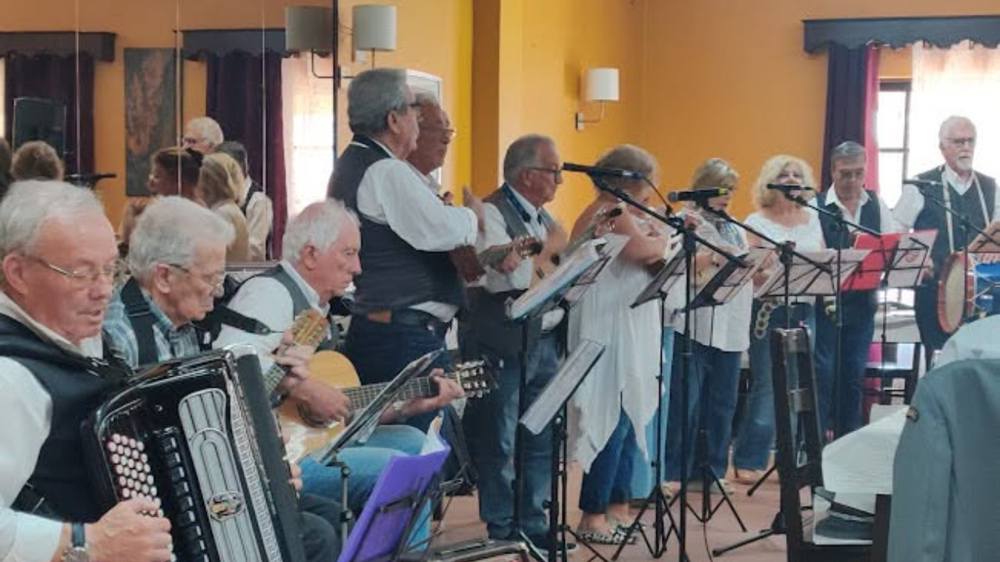
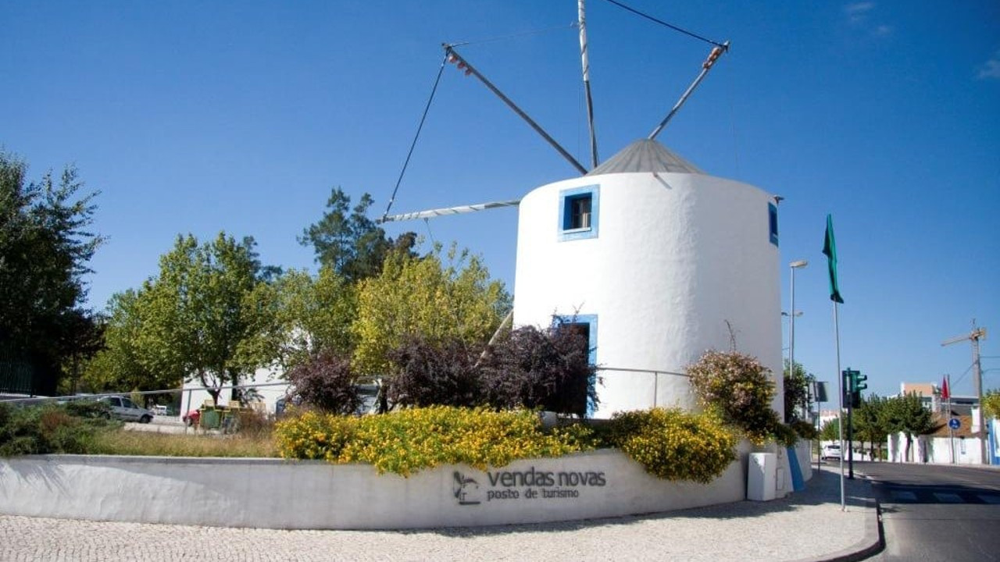
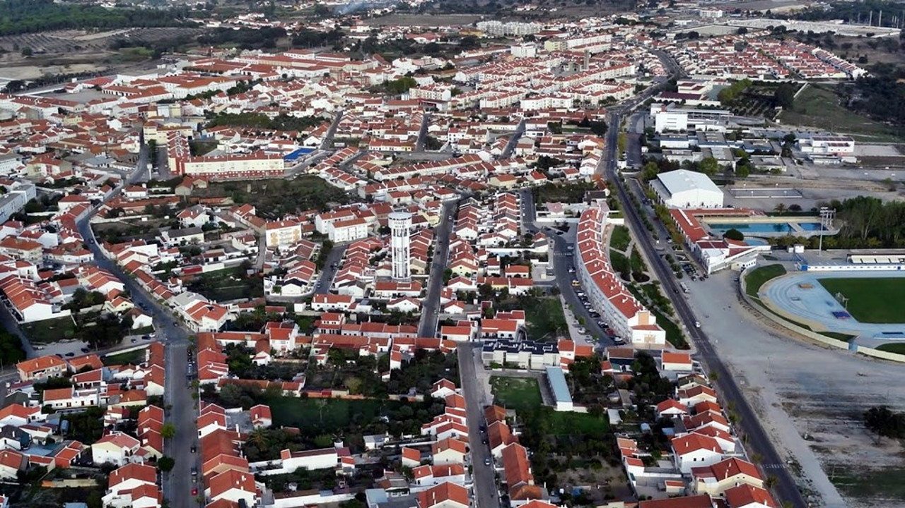
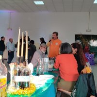
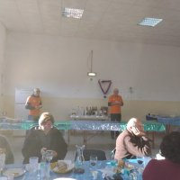
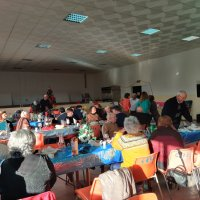
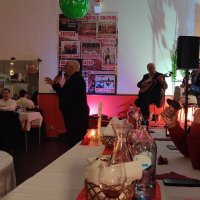
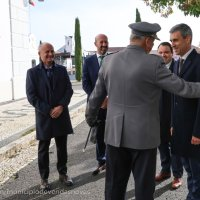

Junta de Freguesia de Vendas Novas
Serviços e Informação ao Cidadão
Serviços e Informação ao Cidadão
 Institucional • 18 Setembro 2026
Institucional • 18 Setembro 2026
A Junta de Freguesia de Vendas Novas assinou um novo Acordo Coletivo de Trabalho de Empregador Público, garantindo a valorização dos recursos humanos e a melhoria contínua das condições de trabalho.
Publicado o Despacho do Processo de Atribuição de apoios extraordinários de emergência para a recuperação das infraestruturas afetadas pelas tempestades na Freguesia.
Estão abertas as candidaturas para o PES da Freguesia de Vendas Novas, destinado a famílias e cidadãos em situação de carência económica ou vulnerabilidade temporária.
Início do processo de candidatura a vales de material escolar e manuais para os alunos residentes no território da Freguesia de Vendas Novas.

Comunidade • 17 Junho 2026Homenagem pública e reconhecimento do papel essencial desempenhado pelo núcleo de dadores de Vendas Novas em prol da saúde pública e solidariedade.
Composição do órgão executivo da Freguesia de Vendas Novas:
Datas festivas e eventos das coletividades da freguesia:
Últimas deliberações e avisos públicos emitidos:
Conheça a história, património, heráldica, associativismo e pontos de interesse de Vendas Novas.
A origem do nome da Freguesia deve-se ao Duque de Bragança, D. Teodósio que, em 1540, juntou aos bens de seus irmãos duas vendas ou estalagens para sua pousada. O desenvolvimento de Vendas Novas esteve sempre profundamente associado à sua localização estratégica como ponto de passagem e descanso nas ligações do Alentejo e Espanha a Lisboa.
Bandeira: Amarela. Cordão e bordas de ouro e verde. Haste e lança de ouro.
Brasão: Escudo de verde, asna de ouro acompanhada em chefe por uma roda dentada de prata entre dois perfis de carril de ouro e, em campanha, por armação de moinho de negro vestida de prata e cordoada do mesmo.
Imagem Institucional: O azul liga a água do Chafariz Real ao céu e ao traço urbano alentejano; o cinzento confere estabilidade e dinamismo.
Conheça os principais monumentos, edifícios históricos e espaços verdes de Vendas Novas:
Monumento de elevado valor histórico ligado à antiga presença real.
Ex-líbris da freguesia mandado construir por D. João V.
Preservação da memória e tradição folclórica de Vendas Novas.
Zona de acolhimento e enquadramento paisagístico do concelho.
Espaço de lazer e convivência para a comunidade local.
O principal parque verde central para passeios e atividades de lazer.
Espaço museológico com a memória militar da unidade histórica de Vendas Novas.
Edifício emblemático associado às antigas passagens reais no Alentejo.
Património arquitetónico marcante no território da freguesia.
Clique numa associação para ver os seus contactos e dados oficiais diretamente na app:
A Freguesia dispõe de estabelecimentos de ensino de excelência integrados no Agrupamento de Escolas de Vendas Novas:
Bombeiros Voluntários: 265 808 100
GNR Vendas Novas: 265 809 210
Centro de Saúde: 265 809 300
Câmara Municipal: 265 807 700
Acompanhe em imagens as atividades, espaços e eventos de Vendas Novas.
 Chafariz Real
Chafariz Real

Vendas Novas
Vista da Freguesia
Evento Comunitário
Iniciativa Local
Atividades e Reuniões
Momentos Culturais
Ação ComunitáriaPreencha os seus dados para submeter um pedido de atestado de residência ou prova de vida.
Ajude-nos a manter a freguesia limpa e segura. Reporte avarias na iluminação, vias de trânsito ou limpeza urbana.